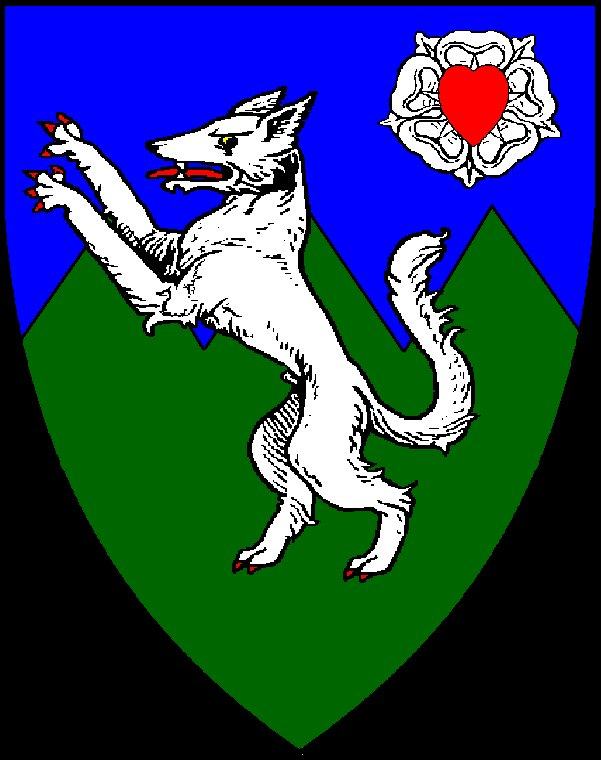
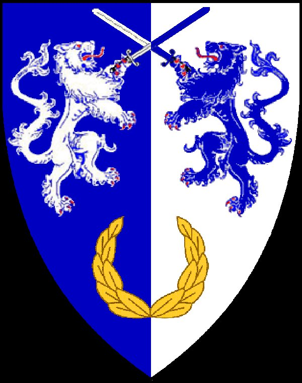
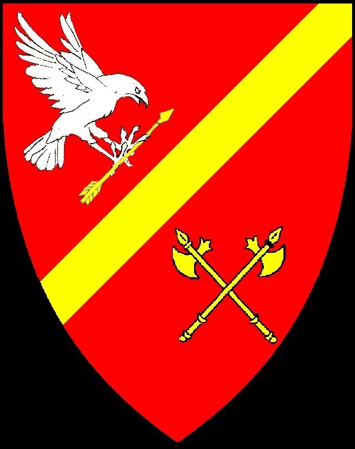
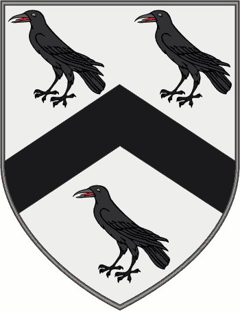
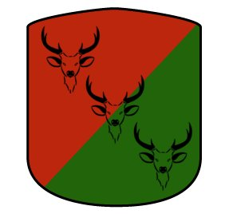
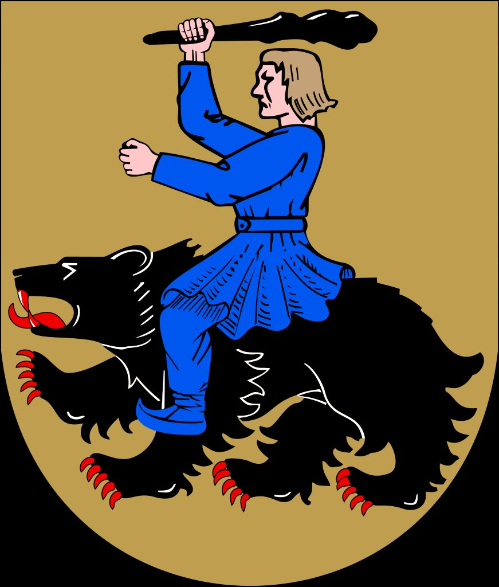
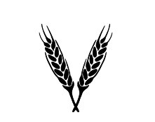

Powers of the Realm
The armies, alliances, and shadowed organizations that vie for power in a kingdom torn apart.

Tyrus holds the capital and claims the throne by right of succession. His forces — depleted, mercenary-reliant — dream of one final campaign to end the war.
Read more →
Darius and Lord Reykoldt fight on in the Long Hills, sustained by iron will and a cause — the restoration of the rightful heir, who has not been seen in years.
Read more →Once conscripts of Kirtas, now an independent army swelling with nationalist pride. King Eneos II watches the north, sensing opportunity in the chaos.
Read more →
Elite scouts and special forces operating along Kirtas's southern border — assessing the mountains, seeking invasion routes, serving King Eneos's ambitions.
Read more →
Once the continent's most illustrious mercenary regiment, the Rook was gutted at Ryol's Creek. What remains is a band of thugs under the brutal Rhadig of Koria.
Read more →
A newer mercenary force led by the former Dalarian general Lucius Solci. Hired by Numior, the Stags remain fresh and disciplined — and hungry for glory.
Read more →
Hardened fighters from the Northern Realms, currently hired by the Tiersgard Burghers. They bring warbears to the field — and a reputation for ferocity.
Read more →
Born as a farmer's collective, now the dominant criminal power in Kirtas. The Threshers control trade through Tiersgard and have shown — strangely — more concern for the common people than either king.
Read more →